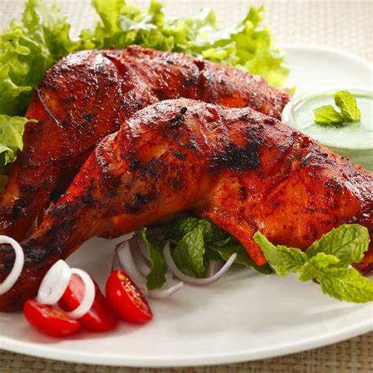

Tandoori Chicken
What is Tandoori Chicken?
Tandoori chicken is a popular Indian dish that is known for its spicy and smoky flavor.
It is made by marinating
chicken in a mixture of yogurt and spices, and then grilling or baking it until it is cooked through.
The dish is
typically served with naan bread and raita, a cooling yogurt-based sauce.
Ingredients
3/4 kg chicken (skinless thighs or legs)
1/2 cup Greek yogurt (hung curd)
1 tablespoon ginger garlic paste (or grated in equal quantities)
1 teaspoon garam masala
1 teaspoon red chilli powder (kashmiri or any low heat chilli)
1/4 teaspoon black pepper (crushed, powder)
1 teaspoon coriander powder (daniya powder)
1/4 teaspoon salt (taste marinade & add more)
1/4 teaspoon turmeric (haldi)
1 teaspoon kasuri methi (dried fenugreek leaves)
1 tablespoon lemon juice
3 1/2 tablespoons oil (preferably mustard oil)
1 tablespoon coriander leaves (chopped, to garnish)
1 teaspoon red chili powder
Instructions / How to Cook
1. In a mixing bowl, combine the chicken, yogurt, ginger garlic paste, garam masala, red chilli powder, black pepper, coriander powder, salt, turmeric, kasuri methi, lemon juice, and oil. Mix well to coat the chicken evenly.
2. Cover the bowl with cling wrap and refrigerate for at least 2 hours or overnight.
3. Preheat the oven to 200°C (400°F). Line a baking tray with parchment paper.
4. Arrange the chicken pieces on the tray and bake for 25-30 minutes or until the chicken is cooked through.
5. Garnish with chopped coriander leaves and red chili powder.
6. Serve hot with naan bread and raita.